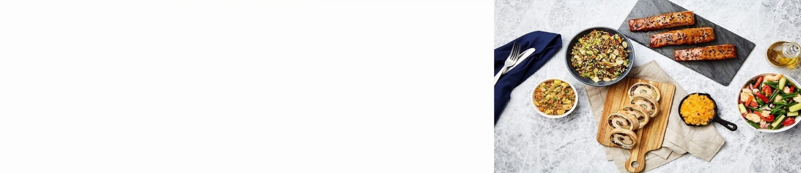
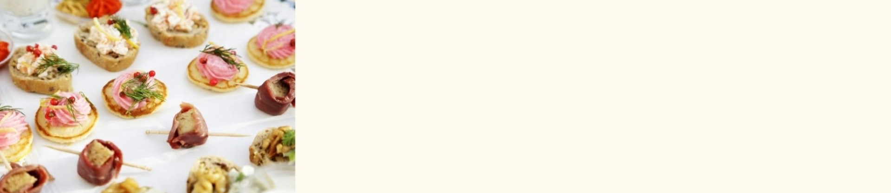
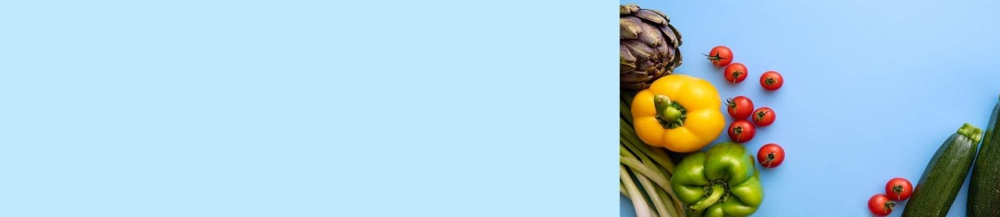
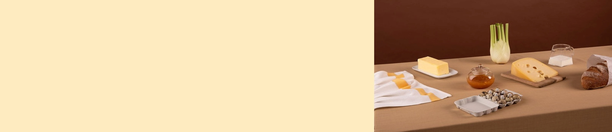

Information
"Q&A"

Q:
단백질은 하루에 얼마나 먹어야 하나요?
A:
보통 일반 성인의 1일 권장 단백질 섭취량은 체중 x 0.9 ~ 1g 정도이고,
몸을 쓰는 직장이나 운동을 꾸준히 하는 분들은 체중 x 1.2 ~ 1.5g 정도 섭취를 권장합니다.
몸을 쓰는 직장이나 운동을 꾸준히 하는 분들은 체중 x 1.2 ~ 1.5g 정도 섭취를 권장합니다.

Q:
다이어트를 하고있는데 치킨을 먹으면 안되나요..?
A:
다이어트를 하시는 분들은 먹고싶은 걸 마음껏 못먹다 보니 예민해지고 스트레스가 많아지게 됩니다
하지만 1~2주에 한번씩은 다이어트 식단이 아닌 먹고싶은 음식을 드셔도 되는데 그 날을 "치팅데이"라고 합니다
지속적으로 칼로리 섭취량을 줄이다 보면 몸에서 칼로리 소모량을 줄이게 되어 체중 감량이 줄어들게 되는데
이는 몸에서 나오는 코티솔 분비가 낮아져서 그렇습니다. 이를 위해 1~2주에 한번씩 치팅데이를 하며 스트레스 호르몬인
코티솔 분비를 활발하게 해줌으로써 더욱 좋은 다이어트 효과를 볼 수 있습니다.
하지만 1~2주에 한번씩은 다이어트 식단이 아닌 먹고싶은 음식을 드셔도 되는데 그 날을 "치팅데이"라고 합니다
지속적으로 칼로리 섭취량을 줄이다 보면 몸에서 칼로리 소모량을 줄이게 되어 체중 감량이 줄어들게 되는데
이는 몸에서 나오는 코티솔 분비가 낮아져서 그렇습니다. 이를 위해 1~2주에 한번씩 치팅데이를 하며 스트레스 호르몬인
코티솔 분비를 활발하게 해줌으로써 더욱 좋은 다이어트 효과를 볼 수 있습니다.

Q:
저녁이나 야식에 음식을 먹으면 살이 더 찌나요?
A:
아닙니다. 음식을 섭취하는 시간에 따라 살이 더 찌고 덜 찌는 것은 잘못된 이야기 입니다.
하지만 너무 늦은 시간에 음식을 먹고 바로 잠을 자게 된다면 자는 동안 음식물이 소화되기때문에,
깊은 수면을 방해해 소화불량이나 역류성 식도염과 같은 병을 유발할 수 있습니다.
하지만 너무 늦은 시간에 음식을 먹고 바로 잠을 자게 된다면 자는 동안 음식물이 소화되기때문에,
깊은 수면을 방해해 소화불량이나 역류성 식도염과 같은 병을 유발할 수 있습니다.
Q:
다이어트 하는데 안주는 안먹고 술만 마셔도 될까요?
A:
안주를 먹지 않으면 알코올이 지방으로 전환되는 비율이 낮아지기는 합니다
하지만 알코올자체의 열량이 매우 높기 때문에,
알코올로 인해 기초대사량으로 쓰이지 못한 다른 영양소가 지방으로 축적됩니다.
즉, 술을 먹기전 먹었던 식사의 열량이 소모되지 않고 체내에 지방으로 축적되게 됩니다.
하지만 알코올자체의 열량이 매우 높기 때문에,
알코올로 인해 기초대사량으로 쓰이지 못한 다른 영양소가 지방으로 축적됩니다.
즉, 술을 먹기전 먹었던 식사의 열량이 소모되지 않고 체내에 지방으로 축적되게 됩니다.

Q:
물만 먹어도 살이쪄요 어떻게 해야하나요?
A:
대단하시군요! 무엇을 얼마나 물처럼 드셨는지 되새겨봅시다!